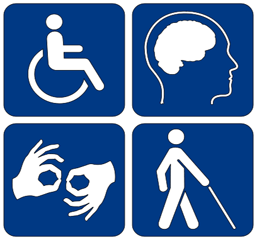
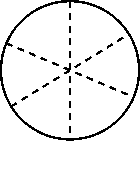
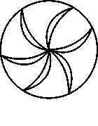

Visual Symbols and the Blind
Part 1
From a number of recent studies, it has become clear that blind people can appreciate the use of outlines and perspectives to describe the arrangement of objects and other surfaces in space. But pictures are more than literal representations.

This fact was drawn to my attention dramatically when a blind woman in one of my investigations decided on her own initiative to draw a wheel as it was spinning. To show this motion, she traced a curve inside the circle (Fig. 1). I was taken aback. Lines of motion, such as the one she used, are a very recent invention in the history of illustration. Indeed, as art scholar David Kunzle notes, Wilhelm Busch, a trend-setting nineteenth-century cartoonist, used virtually no motion lines in his popular figures until about 1877. Fig. 1
When I asked several other blind study subjects to draw a spinning wheel, one particularly clever rendition appeared repeatedly: several subjects showed the wheel's spokes as curved lines. When asked about these curves, they all described them as metaphorical ways of suggesting motion. Majority rule would argue that this device somehow indicated motion very well. But was it a better indicator than, say, broken or wavy lines - or any other kind of line, for that matter? The answer was not clear. So I decided to test whether various lines of motion were apt ways of showing movement or if they were merely idiosyncratic marks. Moreover, I wanted to discover whether there were differences in how the blind and the sighted interpreted lines of motion.
To search out these answers, I created raised-line drawings of five different wheels, depicting spokes with lines that curved, bent, waved, dashed and extended beyond the perimeter of the wheel. I then asked eighteen blind volunteers to feel the wheels and assign one of the following motions to each wheel: wobbling, spinning fast, spinning steadily, jerking or braking. My control group consisted of eighteen sighted undergraduates from the University of Toronto.
All but one of the blind subjects assigned distinctive motions to each wheel. Most guessed that the curved spokes indicated that the wheel was spinning steadily; the wavy spokes, they thought, suggested that the wheel was wobbling; and the bent spokes were taken as a sign that the wheel was jerking. Subjects assumed that spokes extending beyond the wheel's perimeter signified that the wheel had its brakes on and that dashed spokes indicated the wheel was spinning quickly.
In addition, the favoured description for the sighted was the favoured description for the blind in every instance. What is more, the consensus among the sighted was barely higher than that among the blind. Because motion devices are unfamiliar to the blind, the task I gave them involved some problem solving. Evidently, however, the blind not only figured out meanings for each line of motion, but as a group they generally came up with the same meaning at least as frequently as did sighted subjects.
Part 2
|
||||||||||||||||||||||||||||||||||||||||||
|
Fig. 2 Subjects were asked which word in each pair fits best with a circle and which with a square. These percentages show the level of consensus among sighted subjects. |
We have found that the blind understand other kinds of visual metaphors as well. One blind woman drew a picture of a child inside a heart - choosing that symbol, she said, to show that love surrounded the child. With Chang Hong Liu, a doctoral student from China, I have begun exploring how well blind people understand the symbolism behind shapes such as hearts that do not directly represent their meaning.
We gave a list of twenty pairs of words to sighted subjects and asked them to pick from each pair the term that best related to a circle and the term that best related to a square. For example, we asked: What goes with soft? A circle or a square? Which shape goes with hard?
All our subjects deemed the circle soft and the square hard. A full 94% ascribed happy to the circle, instead of sad. But other pairs revealed less agreement: 79% matched fast to slow and weak to strong, respectively. And only 51% linked deep to circle and shallow to square. (See Fig. 2.) When we tested four totally blind volunteers using the same list, we found that their choices closely resembled those made by the sighted subjects. One man, who had been blind since birth, scored extremely well. He made only one match differing from the consensus, assigning 'far' to square and 'near' to circle. In fact, only a small majority of sighted subjects - 53% - had paired far and near to the opposite partners. Thus, we concluded that the blind interpret abstract shapes as sighted people do.
Questions 1-3
Choose the correct letter, A, B, C or D.
Write your answers in boxes 1-3 on your answer sheet.
1 In the first paragraph the writer makes the point that blind people
A may be interested in studying art.
B can draw outlines of different objects and surfaces.
C can recognise conventions such as perspective.
D can draw accurately.
2 The writer was surprised because the blind woman
A drew a circle on her own initiative.
B did not understand what a wheel looked like.
C included a symbol representing movement.
D was the first person to use lines of motion.
3 From the experiment described in Part 1, the writer found that the blind subjects
A had good understanding of symbols representing movement.
B could control the movement of wheels very accurately.
C worked together well as a group in solving problems.
D got better results than the sighted undergraduates.
Questions 4-6
Look at the following diagrams (Questions 4-6), and the list of types of movement below.
Match each diagram to the type of movement A-E generally assigned to it in the experiment.
Choose the correct letter A-E and write them in boxes 4-6 on your answer sheet.
|  |  | |
| 4 | 5 | 6 |
A steady spinning
B jerky movement
C rapid spinning
D wobbling movement
E use of brakes
Questions 7-13
Complete the summary below using words from the box.
Write your answers in boxes 7-13 on your answer sheet.
NB You may use any word more than once.
In the experiment described in Part 2, a set of word 7 was used to investigate whether blind and sighted people perceived the symbolism in abstract 8 in the same way.
Subjects were asked which word fitted best with a circle and which with a square. From the 9 volunteers, everyone thought a circle fitted ‘soft’ while a square fitted ‘hard’.
However, only 51% of the 10 volunteers assigned a circle to 11 . When the test was later repeated with 12 volunteers, it was found that they made 13 choices.
|
associations |
blind |
deep |
hard |
|
hundred |
identical |
pairs |
shapes |
|
sighted |
similar |
shallow |
soft |
|
words |
---End of the Test---
Please Submit to view your score, solution and explanations.